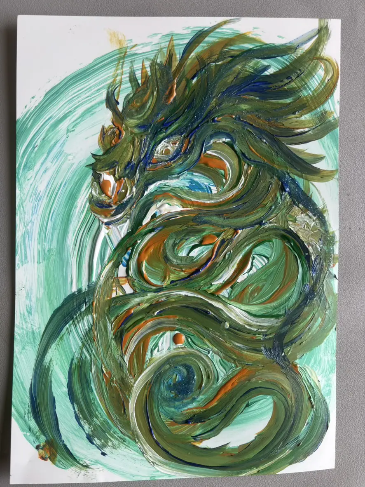
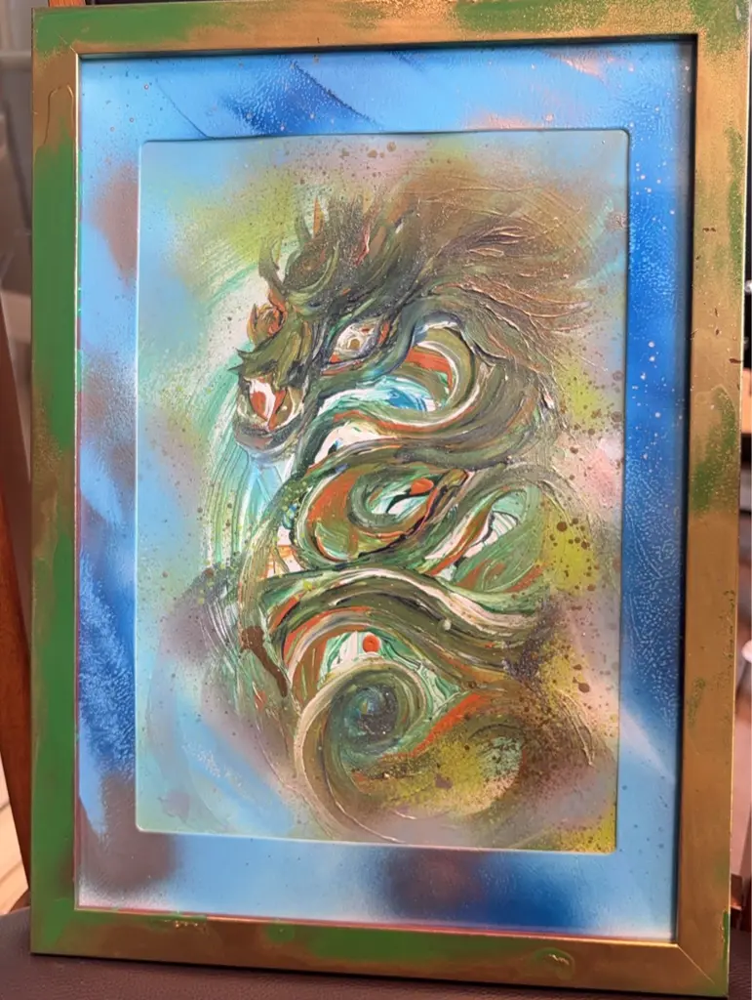

HAPPY ICHIRODO · 04
守護龍おろし 鳴子さん
✨光の国（地球）へ✨
一人一人が神様です。地球創生「自分の龍神さま」と「他の守護霊さま」に護られ、なりたい自分に導いてくださいます。
この【地球衰退】の時期に龍神さまの導きにより、鳴子さんは自動手記でその方の龍神様をおろすお役目を授かり、LINE電話でお話ししながら（60分くらい）その方のエネルギーを受取り、龍を降ろしてくださいます。
人＝神＝光
人々が導かれ、その結果「光のネットワーク」ができます。日本が光の国となり、光につつまれた地球になります。


光を拡げたいと思った方、自分の龍神様にお会いしたい方、龍神様を降ろしていただけます。
お繋ぎいたしますので、ときめき神社ラブのLINEにご連絡ください。
サイズA4
料金20,000縁（税込）＋送料（お気持ち）
お申込みからお届けまで・流れ・
- ときめき神社ラブのLINEに申込み
- 鳴子さんのLINEと繋がる
- 鳴子さんと日程調整をする
- お約束の日時に鳴子さんにLINE電話する
- LINE電話中または、終了後に生まれたての龍神様がLINEに送られてくる
- 翌日以降、エネルギー入れ完了後に発送
- 受取確認後、現金書留で支払う